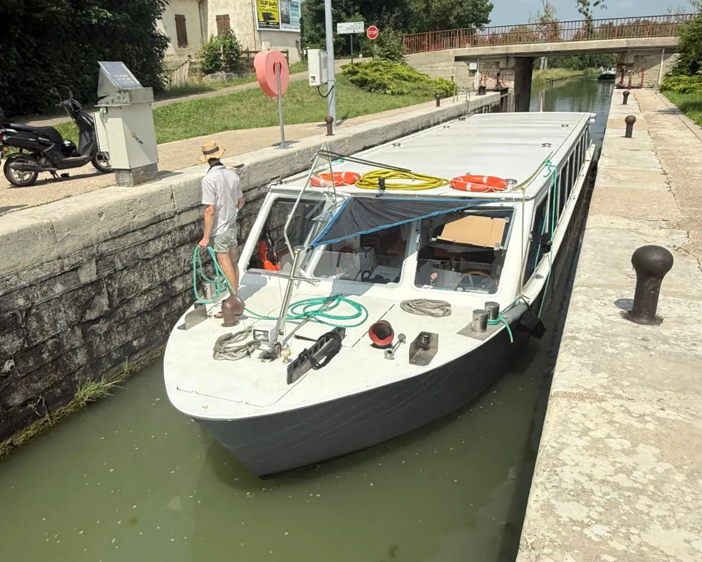
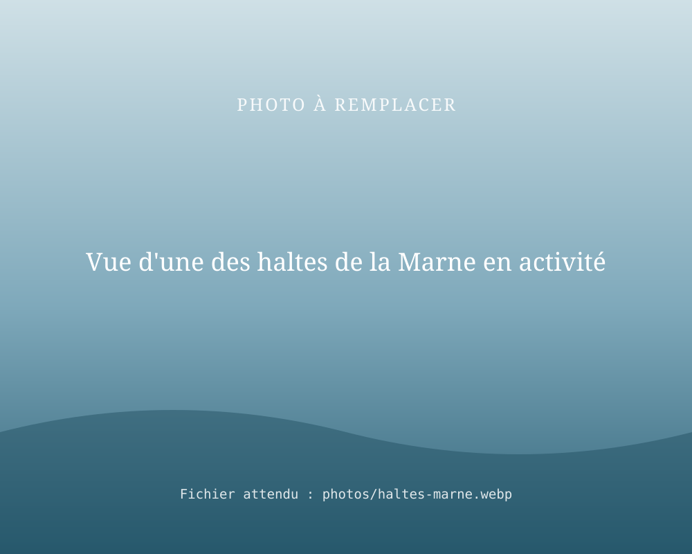

Nos références auprès des collectivités
Deux références illustrent notre savoir-faire pour les territoires : l'accompagnement de la Communauté de communes de Pouilly-Bligny dans l'achat d'un bateau pour le Canal de Bourgogne, et la création puis l'exploitation de 4 haltes fluviales sur la Marne.

Communauté de communes de Pouilly-Bligny : La Billebaude
- Contexte
- La collectivité et son office de tourisme cherchaient un bateau pour lancer des balades fluviales sur le Canal de Bourgogne.
- Mission
- Recherche du bateau aux Pays-Bas, puis acheminement de La Billebaude depuis la Hollande jusqu'à Pouilly-en-Auxois.
- Résultat
- La Billebaude, vendue à la collectivité, assure des balades fluviales sur le Canal de Bourgogne.

4 haltes fluviales créées et exploitées sur la Marne
- Contexte
- Des berges de la Marne sans aucun équipement d'accueil.
- Mission
- Création de toutes pièces de 4 haltes fluviales, dont 2 à La Ferté-sous-Jouarre : aménagement, accueil des plaisanciers, animation des berges.
- Résultat
- 4 haltes exploitées de 2019 à 2025. [À COMPLÉTER : localisation des 2 autres haltes, chiffres de fréquentation]
[À COMPLÉTER : témoignage d'un élu ou d'un technicien de collectivité, avec son accord]
Nom, fonction, collectivitéQuestions fréquentes
Quelles collectivités RivesEnRêves a-t-elle accompagnées ?
RivesEnRêves a notamment accompagné la Communauté de communes de Pouilly-Bligny et son office de tourisme : nous avons trouvé aux Pays-Bas La Billebaude, un bateau à passagers, et l'avons acheminé jusqu'à Pouilly-en-Auxois pour des balades fluviales sur le Canal de Bourgogne.
RivesEnRêves a-t-elle déjà créé des haltes fluviales ?
Oui : RivesEnRêves a exploité 4 haltes fluviales sur la Marne de 2019 à 2025, dont 2 à La Ferté-sous-Jouarre, créées sur des sites où il n'y avait rien à l'origine.
Votre territoire, notre prochaine référence ?
Parlons de votre projet de tourisme fluvial.